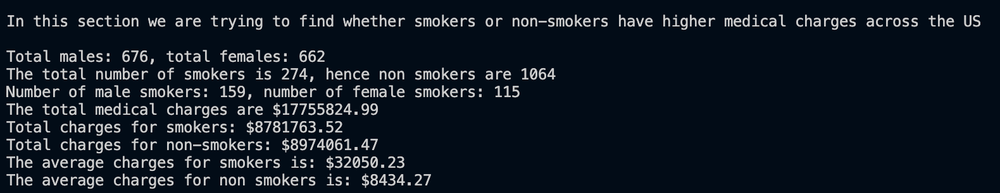

US Medical Insurance Costs
From: Codecademy
By: Krutarth Ghuge
Project Date: June 2024
Project Description
For this project, I investigated a medical insurance costs dataset in a .csv file (insurance.csv) using the Python skills that I have developed so far. This project was programmed using the Visual Studio Code editor and has been pushed to my Github repo.
Project Goals
- To assess the data collected in the csv file based on the factors mentioned.
- How a factor affects the medical charges on the patient.
- Does being healthy reduce medical charges?
- More children = more bills?
- Does your sex affect medical charges?
Data
The data available from the csv file (insurance.csv)
Headers (for each person (entry)):
- Age of person (numerical attribute): age
- Sex (categorical attr. - male / female): sex
- Body Mass Index (numerical attr.): bmi
- Number of children (numerical attr.): children
- Smoker (categorical attr. - yes / no): smoker
- Region of th US the person resides (categorical attr. - Northwest, Northeast, Southeast, Southwest): region
- Medical charges on insurance (numerical attr.): charges
There are a total of 1338 data entries (people) whose data is collected into this csv file. Points to note:
- There is no missing data.
- There are seven columns.
- Some columns are numerical while some are categorical.
Analysis
I have performed some basic and intermediate analysis on the given data.
From the dataset, is it possible to conduct various number of analysis ranging from
the use of just one attribute to all of them. For this project, I am performing (writing)
few
functions or doing mathematical calculations to analyze and further visualize my findings.
Our data with highest interest is the charges column which is the ultimate base of
this research file (most analysis includes this column).
Analysis that I performed:
- Whether smokers have higher medical charges than non-smokers.
- How the medical charges change with age.
- How BMI across different regions of the US affect medical charges.
- Trend between number of children of person and medical charges.
- Do males or females have higher charges.
Evaluation
1. Whether smokers have higher medical charges than non-smokers.
Data calculated:
- The total number of people in dataset = 1338
- Total number of males and females = 676, 662 respectively
- Total number of smokers and non-smokers = 274, 1064 respectively
- Total number of male smokers and female smokers = 159, 115 respectively
- The total medical charges = $17,755,824.99
- The total medical charges for smokers and non-smokers = $8781763.52, $8974061.47 respectively
- The average charges for smokers and non-smokers = $32050.23, $8434.27 respectively
Concluding with our findings, the results show that smokers had a higher average medical charge than the non-smokers. Although the total charges for each group were near about the same, due to a small number of smokers in the dataset, their average charge soared.
2. How the medical charges change with age.
3. How BMI across different regions of the US affect medical charges.
4. Trend between number of children of person and medical charges.
5. Do males or females have higher charges.
Outputs
Analysis 1
Analysis 2
Analysis 3
Analysis 4
Analysis 5
Further Study
Resources and Links